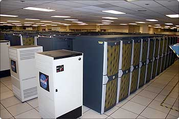

Dr. Birk and his colleague at the Parallel Systems Laboratory of the Technion (Israel Institute of Technology) investigated congestion in high-performance (HPC) computing clusters using the InfiniBand® interconnection network, with the help of Eitan Zahavi of Mellanox Technologies (Mellanox is a leading provider of InfiniBand equipment). InfiniBand (24%) is one of the most prevalent interconnects in the top 500 supercomputers, alongside Gigabit Ethernet (58%) (2009). Congestion arises in cluster-based supercomputers due to contention for links, and spreads due to oversubscription of communication resources.
The researchers used OMNeT++ simulations to explore and evaluate various options to mitigate congestion and improve the performance of the system. Since the goal was to simulate large networks with thousands of nodes, they created special InfiniBand models that operate at the functional, rather than cycle-accurate, level. Although the methods under study for reducing congestion are topology agnostic, the team examined them on a k-ary n-tree topology, which is a variant of a practical fat tree. This topology is popular in modern clusters.
Based on simulation experiments, the team proposed novel adaptive routing and rate calculation algorithms. On a slightly augmented 16-ary 3-tree implementing a 4096-node fat tree (which is highly representative of current computer clusters), adaptive routing alone was shown to be effective at mitigating the "topological" congestion, reducing it by approximately 50%. The necessary slight topological extension only entailed a 10% increase in the number of switch ports. The study contributes to the understanding of supercomputer architectures and helps build more powerful supercomputers in a cost-effective way.
Yitzhak Birk and Vladimir Zdornov (Technion, Israel Institute of Technology), 2009. "Improving communication-phase completion times in HPC clusters through congestion mitigation." SYSTOR '09: Proceedings of SYSTOR 2009: The Israeli Experimental Systems Conference: 1--11.
{% include next_casestudy_links.html %}